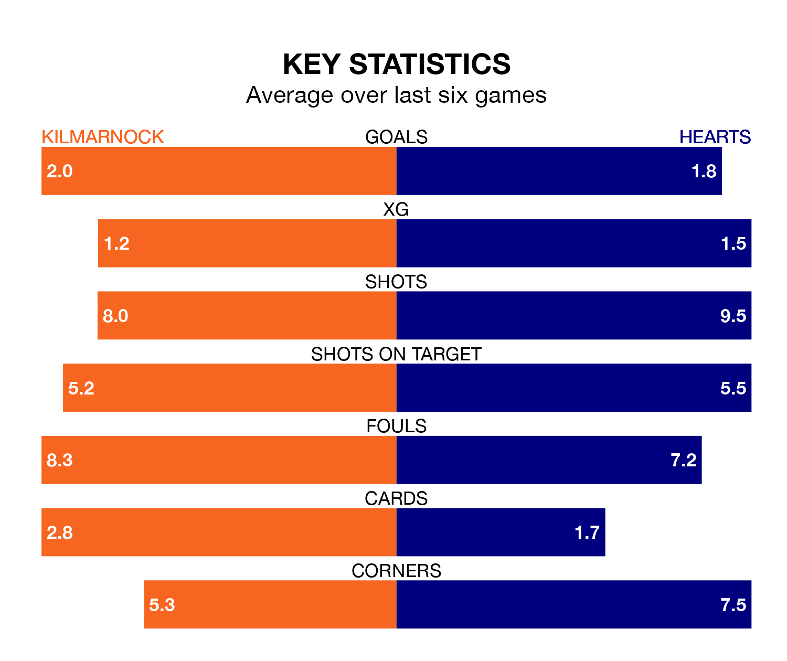

Two of the Premiership's top sides face each other at the BBSP Stadium Rugby Park in Saturday's kick-off, when fourth-placed Kilmarnock host third-placed Hearts.
Kilmarnock have picked up 13 wins and 12 draws from 33 games so far this season, and sit 11 points below the visitors going into the 3pm match.
Hearts, meanwhile, have won 19 and drawn five, picking up 62 points.
With 46 goals in 33 games so far this season, Hearts are the league's joint-third-highest scorers with 1.4 goals per game. And they are conceding fewer than average, letting in 34 goals at a rate of 1.0 per game.
Kilmarnock, meanwhile, are average scorers, with 1.3 goals per game. They have conceded 1.0 goal per game.
In Lawrence Shankland, the away side have the league's sharpest shooter so far this season. He has notched 21 goals in 32 appearances.
His goal rate of one every 137 minutes is quicker than that of Marley Watkins, Killies's top scorer with a goal every 266 minutes, and a total of nine goals in 31 games.
In the last 10 years, Kilmarnock and Hearts have played each other on 26 occasions. Kilmarnock won 10 of them, Hearts nine, and they drew seven times.
On average, Killies scored 1.0 goals and Hearts 1.2 in those matches.
Their last meeting was on March 30, when they played out a 1-1 draw.
The hosts are in reasonable form in the Premiership, with three wins and two draws from their last six games.
And also with three wins and two draws over that period, Hearts's form is identical – they have both taken 11 points from 18.
Kilmarnock's last match was on April 13, a 2-0 win against St. Johnstone, with Joe Wright and Watkins getting the goals for Killies.
Hearts beat Livingston 4-2 last time out, also on April 13, with Cameron Devlin, Jorge Grant, Shankland and Yutaro Oda on the scoresheet.
Updated: 07:59 (UTC), 26/04/24